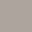
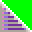
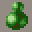

Block TypesUsing Block TypesEach scenery block in a map has a "Block Type" associated with it which defines how Rayman, his enemies and other events in a level react to the block. A block in a flat grassy platform may have a "Solid Type" which means that Rayman can walk on it. Snow in the Mountain World may have a "Slippery Type" which means that Rayman will slide on it. Spikes in the Cave World may have the "Death Type" assigned to it which causes Rayman to lose a life point when he touches the spikes. The Template and Example Maps contain handy scenery predrawn with blocks with the recommended Types already assigned to them. In the Mapper, when you copy any of this background scenery to your new level, you automatically copy the Block Types. You usually do not need to worry about changing these Block Types. There may be times when you want to change the default Types. The basic properties of blocks should be respected when choosing a new block Type. It may seem fun to have Rayman fall through a solid looking musical bar or drown on a grassy platform, but that is not good game design! You can assign Types to blocks in either the Mapper or in the Events Editor. (For detailed instructions see Working with Block Types in the Mapper or Using the Events Editor.) It is much easier to work with Block Types in the Mapper. When you are building your background scenery, make sure you check the Block Types from time to time. This is especially important when you are building complex scenery from bits and pieces of different design units. You can mistakenly get Solid and Null Types intermixed and create platforms with holes or solid looking walls that Rayman can magically walk through! The Block TypesNull Type: Blocks with this type have no effect whatsoever on Rayman. This is the Block Type that is assigned to most of the "empty" space in a map and some of the background scenery such as the plants in the Jungle World. Rayman just walks in front of the scenery on the blocks with this Type.  Solid Type: This is solid ground, allowing Rayman and other moving objects to walk on it. If this Block Type is used on a vertical wall, it will appear solid to Rayman and he will not be able to walk through it. Pass-through Type: This is similar to the Solid Type, but Rayman can pass-through it from below to above. It is used for small platforms of one block thickness that Rayman can jump through, but still appear solid to him when he is standing on them. It is also used on the edges of larger, solid platforms to enhance the effect of the jagged edges of the platforms. Slippery Type: Rayman slips and slides when he's on a Slippery Type. Rayman slips, but his enemies such as the Antitoons can walk on them! This Block Type has the same characteristics as the Pass-through Type. It is used on flat slippery surfaces such as the icy musical bars, black ink on the erasers in the Image World, and frosting in the Cake World.
Water Type: When Rayman contacts a Water Type, an animated sequence is triggered of him drowning. These types are usually associated with the water in the Jungle and Cave Worlds, and green syrup in the Cake World. Death Type: When Rayman touches a Death Type, he loses one life-point. When Rayman collides with one of these Types he is highlighted and for a brief moment he will not react to Types or enemies. Prickly surfaces such mountain and cave spikes, musical notes, and the containers with spikes in the Image World have the Death Type. Instant Death Type: The Instant Death Type is only to be used to ensure the death of Rayman instead of deducting a life-point. It is used on musical notes which line the bottom of the screen, spikes at the bottom of pits in the Cave and Mountain Worlds, and some of the containers of spikes in the Image World. Falling Type: When Rayman has a fatal fall, these Types are put into position to trigger an animated sequence of him falling. For this animation to be credible, Falling Types must be placed at least 5 blocks below the platform from which Rayman falls. These Types are usually placed in empty space to ensure Rayman's death. Bounce Type: (Usually used only in the Image World) When Rayman lands on a block with this Type, he automatically jumps. This Type is used on the top of the bouncy blue erasers in the Image World. The Bounce Type is similar to the Pass-through Type; Rayman can jump up through small one block thick platforms with this type. Although this Type can be used in the other Rayman worlds, it should only be used where it makes sense in a game. It would not be good game design to use it on a grassy path in the Jungle World! Climbing Type: (Usually used only in the Jungle World) The only predrawn scenery elements which use this Type are the vines in the Jungle World. Rayman can cling onto and climb up the vines. With some creativity in the Mapper, this Type can be used in other worlds to simulate ropes or other objects that Rayman would logically climb. Reactive Type: Usually positioned to constrain the movement of events such as platforms, clouds, and enemies events. For example, columns of Reactive Types are used to make a Horizontal Cloud move back and forth within an area on the screen. A box drawn of Reactive Types will constrain an Antitoon Flyer to a small region of the screen. (For more information, see the section on Using Reactive Types.)  Seed Type: (Can only be used in the Jungle World) In the Jungle Rayman can plant a seed which grows into a tall water lily that he can climb on. To allow him to do this, position two Seed Types next to each other. The Seed Types are usually placed on little mounds of dirt that are supposed to be the only logical places to grow these plants. If you want the water lily to be deadly, place a second row of Seed Types on top of the first. Examples of Scenery and Block Types
The above example is part of a map from the Jungle World. The water on either side of the grassy island has the Water Type. If Rayman falls into the water, he will drown. The bottom grassy platform has a gradually sloping hill with flat areas on both edges of the island. The blocks which make up the hill have Slope Types; the flat areas have the Solid Type. The platforms will feel solid to Rayman. The short vine between the bottom and second platform has the Climbing Type which means Rayman can climb up the vine. The topmost grassy platform has the Pass-through Type. Rayman can stand on the second platform and jump up through the topmost grassy platform to stand on it. The platform will be solid to walk on, but Rayman will not "hit his head" when he jumps. The edges of the second grassy platform are also Pass-through Types. This helps create the illusion that the edges of the grass are not completely solid. There are two Seed Types on the upper platform where the little pile of dirt can be seen in the normal view. This means Rayman can plant a water lily seed there. The rest of the background scenery has the Null Type; the Mapper just shows the scenery images on the Null blocks.
This example is from the Cave World. The spikes on the vertical walls and the spikes on the top of the two stone pillars have the Death Type. If Rayman touches them he will lose a life-point. The sharp spikes at the bottom of pit have the Instant Death Type. If Rayman falls down into the pit, he will be killed immediately. To the right of the spiked rocks is an area of Falling Types. If Rayman jumps off the right side of the spiked rocks, an animated sequence of a fatal fall will be shown.
In this example from the Music World, the end of the musical bar has the Slippery Type and there is a small section of Slippery Slope Types. The notes at the bottom of the screen have the Instant Death Type which will ensure that Rayman dies if he falls on them. |